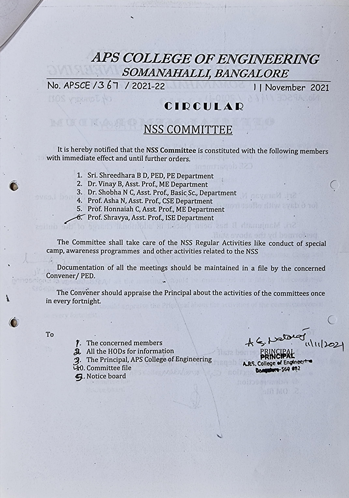
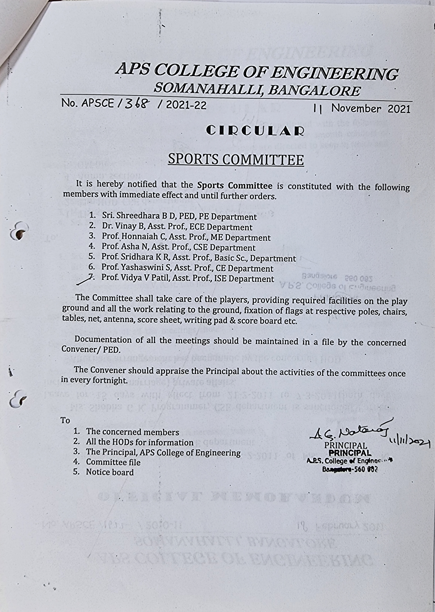
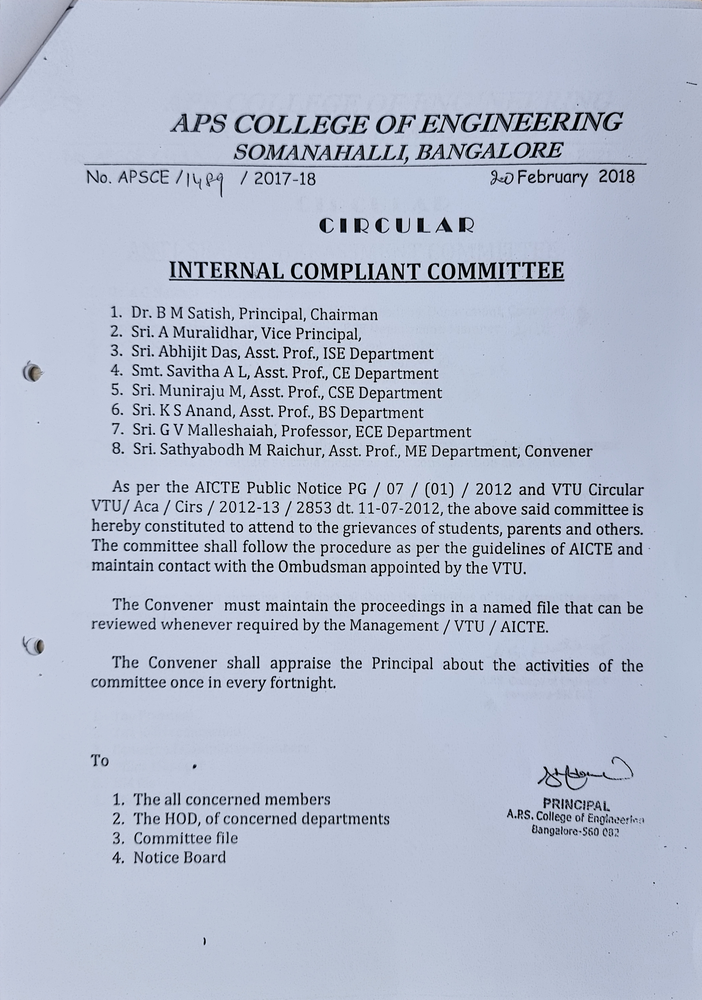
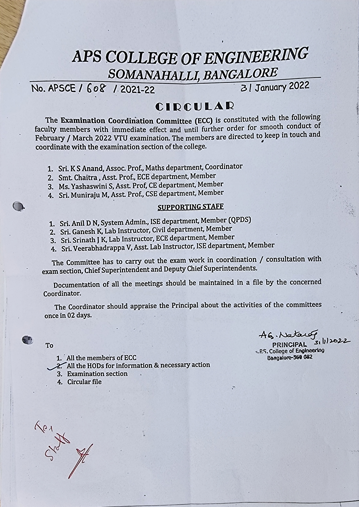

NSS committee seeks to integrate social responsibility with personality development. These committees
are active in organizing several extension activities like tree plantations, blood donation camps, swachh
bharath campaign, etc., NSS unit also conducts awareness camps on the importance of rain water
harvesting, prevention of water borne diseases, organ donation, eradication of plastic usage etc.

The sports committee shows leadership in organizing various sports activities on and off campus,
coordinates and promotes participation of students in inter-collegiate sports festivals, plans and organizes
sports day in the institution every year.

The professional societies like IEEE, ISTE, SAE, CSI student chapters, robotic club etc., are functioning in
the college which conducts regular programs. In addition, every department has a student association. The
technical committee helps students stay connected to the wide spread network of research groups. The
committees inculcate research attitude among students by organizing events like paper and poster
presentations, project exhibitions, participation in conferences etc., Students are encouraged and guided to
participate in various competitions of state and national level.
The institution has an active student council which provides various platforms for the students to enhance
their potentialities and develop their leadership qualities. The various student committees comprise of
representatives from all groups of students and are led by faculty members of the institution. The
committees include Departmental, Technical, Cultural, social, Sports and such other committees as per the
interest of the students stepping up to take up an active role. The main purpose of these committees is to
ensure harmony across an ample, vibrant and continuous range campus events and activities in the course
of an academic year.

The main purpose of implementing Centralized Internal Assessment Examination Cell in
APSCE is to bring transparency in the periodic evaluation of teaching-learning process. The centralized
internal assessment examination cell organizes the Internal Assessment Examinations as per the calendar
of events of the institute to assess the performance of students over a well distributed interval of time with
in the semester and to make the examination an internal and integral part of the teaching process.